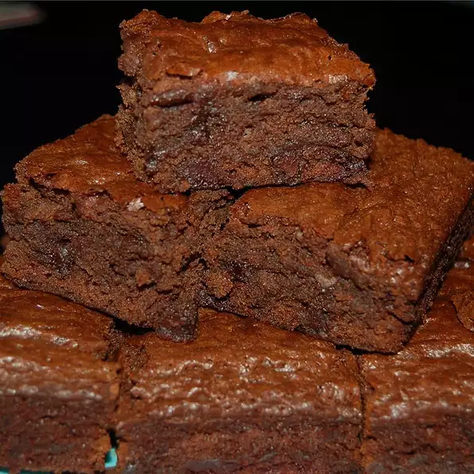

Easy Banana Brownies

Who doesn't enjoy chocolate with bananas?!
A small banana is added to a basic made-from-scratch brownie for a hint of banana flavor. This is a fudgy brownie and it does not rise much. Add 1/2 cup chopped nuts or mini chocolate chips for more flavor. No mixer required!
Ingredients
- ½ cup butter
- ⅔ cup semisweet chocolate chips
- 1 large egg
- ⅔ cup packed light brown sugar
- 1 small ripe banana, mashed
- ½ teaspoon vanilla extract
- ¼ teaspoon salt
- ¾ cup all-purpose flour
Steps
- Preheat an oven to 325 degrees F (165 degrees C). Grease an 8 inch square pan.
- Melt butter in sauce pan over medium-low heat. Remove from heat, add chips, and stir until melted. Set aside to cool for 5 minutes.
- Lightly beat the egg in a medium bowl. Stir in the brown sugar, banana, vanilla, and salt. Pour the melted chocolate mixture into the banana mixture, and stir until well combined. Add the flour, stirring just until incorporated. Spread the batter into the prepared pan.
- Bake in the preheated oven until a toothpick inserted near the center comes out with moist crumbs, about 30 minutes. Don't over bake. Remove, and cool pan on wire rack before cutting.